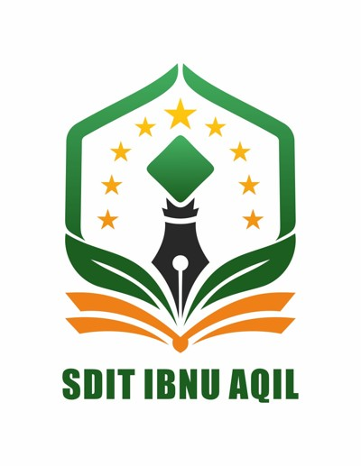
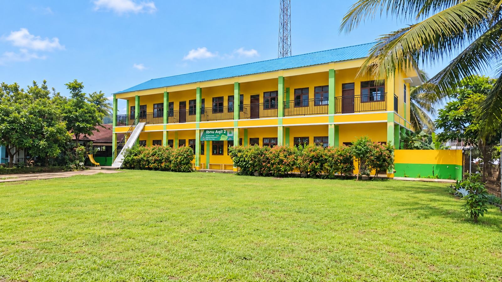
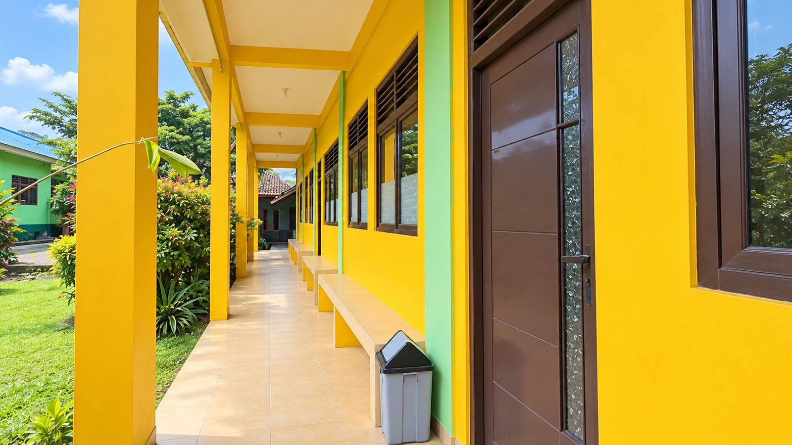
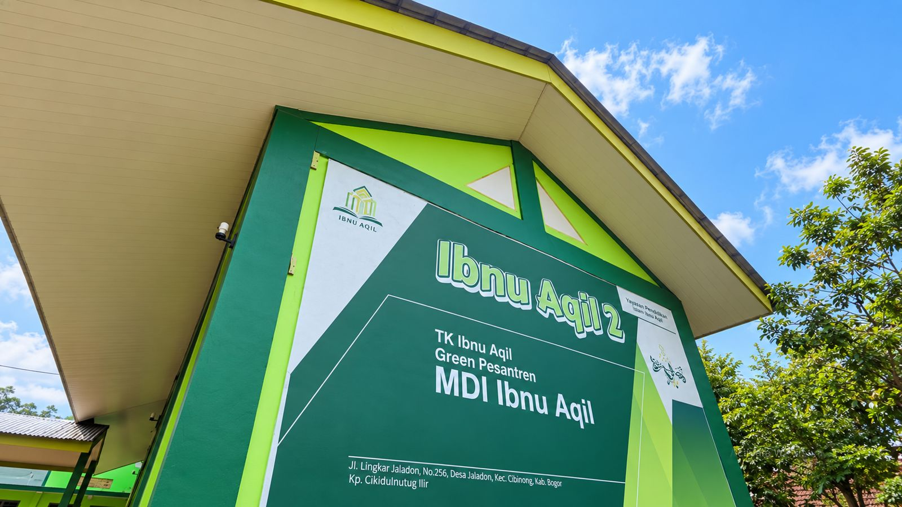
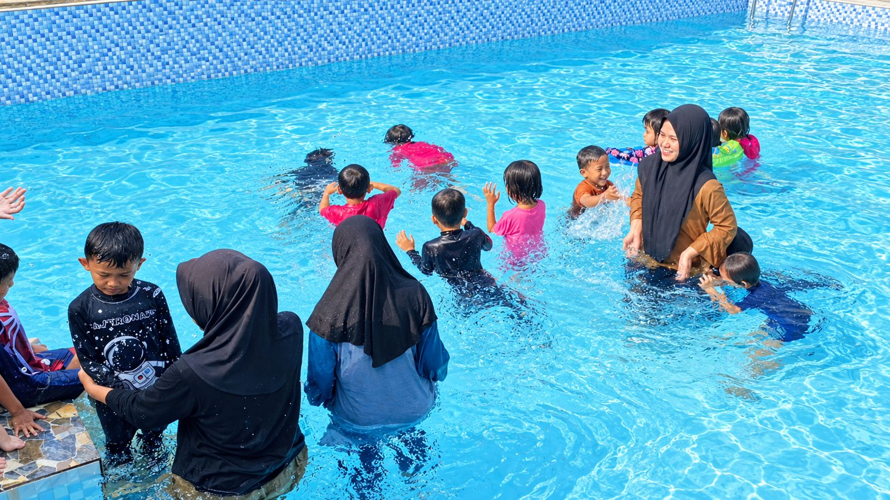

SDIT Ibnu Aqil 2
Sekolah dasar Islam terpadu dengan sistem full day school dan program kepesantrenan.

Visi
Mewujudkan generasi yang beriman dan bertakwa, berilmu, berakhlak, berprestasi, mandiri, dan peduli lingkungan.
Jadwal belajar
- Senin-Kamis
- 07.00-14.00 WIB
- Jum'at
- 07.00-10.00 WIB
Khusus alumni TK Ibnu Aqil 2 dan 10 pendaftar pertama: diskon 50% dan bonus tas sekolah.
Program unggulan
- Bimbingan praktik ibadah
- Bimbingan mengaji
- Media pembelajaran menarik
- Program Happy School
- Program kepesantrenan
- Outing class
- Fasilitas indoor dan outdoor
- Full day school
Fasilitas pendukung
Semua fotoOutdoor: area bermain, lapangan olahraga, dan kolam berenang
Indoor: ruang kelas, media edukasi, toilet, dan aula serbaguna
Seragam: Baju batik dan baju olahraga

Foto estimasi ketika bangunan selesai


Brosur SDIT Ibnu Aqil 2
Simpan brosurnya untuk dibaca nanti atau dikirim ke keluarga.
Masih ada yang ingin ditanyakan?
Admin kami siap menjelaskan dengan sabar, termasuk soal biaya dan jadwal tes.